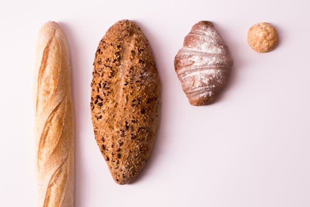
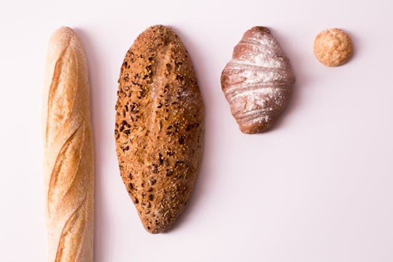

El Sabor de la Tradición en Cada Rebanada
Pan artesanal, horneado diariamente con pasión e ingredientes naturales.
Pan Artesanal Recién Horneado: Tradición y Sabor
En nuestra panadería, el pan no es solo un alimento; es una obra de arte. Cada pieza es elaborada a mano con técnicas ancestrales y fermentación lenta, lo que le da una corteza crujiente y una miga suave y aireada. Nuestro horno de piedra, calentado a la perfección, realza los sabores naturales de cada ingrediente, liberando aromas que te transportarán a una panadería tradicional. Con cada rebanada, disfrutarás de la pasión y dedicación que ponemos en nuestro oficio, un sabor que solo el pan horneado diariamente puede ofrecer.
Ingredientes Frescos y de Origen Local
En nuestra panadería, el sabor auténtico comienza con la selección de los mejores ingredientes. Obtenemos nuestra harina de molinos locales y utilizamos huevos de granjas cercanas, garantizando que cada pan no solo sea delicioso, sino también un reflejo de la frescura y la calidad de nuestra comunidad. Creemos que los ingredientes frescos marcan la diferencia en el sabor, y estamos orgullosos de apoyar a los productores locales en cada paso de nuestro proceso de horneado.

Un Lugar para Disfrutar y Conectar
Más que una panadería, somos un punto de encuentro para la comunidad. Te invitamos a visitarnos y a disfrutar de un momento de paz mientras eliges tu pan favorito, recién salido del horno. Aquí, el tiempo se detiene. Ya sea que vengas a buscar tu pan diario, a conversar con nuestros panaderos o simplemente a disfrutar del increíble aroma de nuestros productos, encontrarás una cálida bienvenida y un ambiente que te hará sentir como en casa. Nuestra misión es crear no solo el mejor pan, sino también una experiencia inolvidable para cada uno de nuestros clientes.

CLIENT TESTIMONIALS

¡Increíblemente delicioso! El pan artesanal de esta panadería es el mejor que he probado. Su sabor y textura me recuerdan a la panadería de mi abuela. Se nota la dedicación y el amor en cada pieza.

Siempre paso a comprar pan aquí antes de ir a trabajar. Es una delicia que me ayuda a empezar el día con el pie derecho. El aroma que se percibe desde la calle es increíble y los ingredientes que usan son de alta calidad.

Descubrí esta panadería por casualidad y me enamoré de su pan. Los precios son accesibles y la calidad es insuperable. Me alegro de haberlos encontrado, ya que ahora no puedo vivir sin su pan.

 
